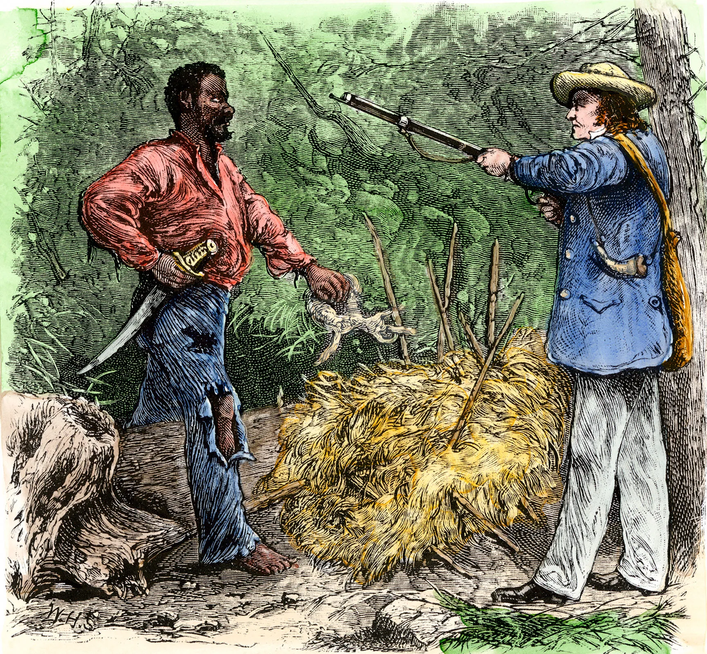
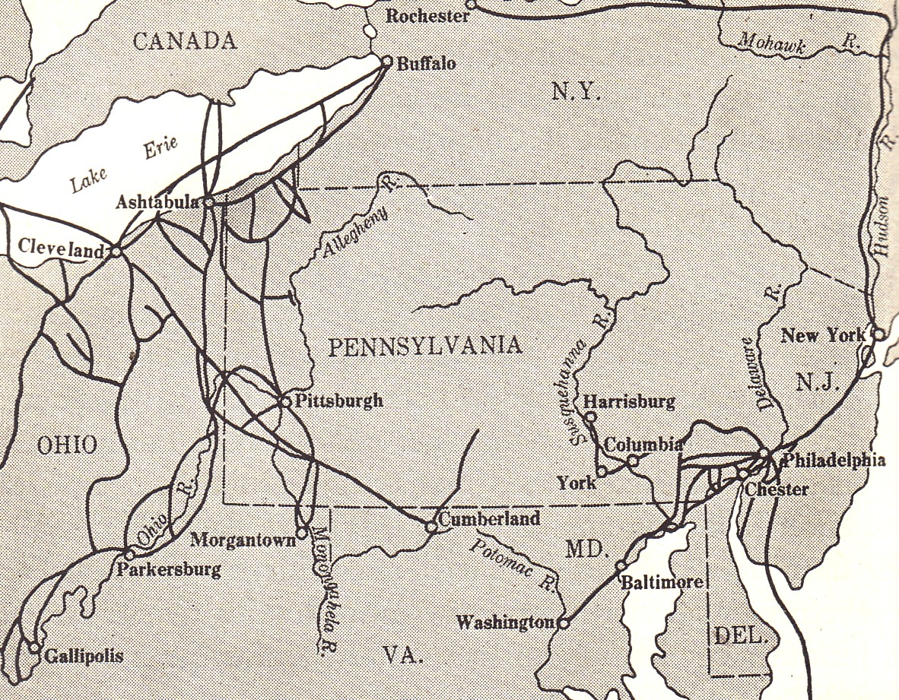
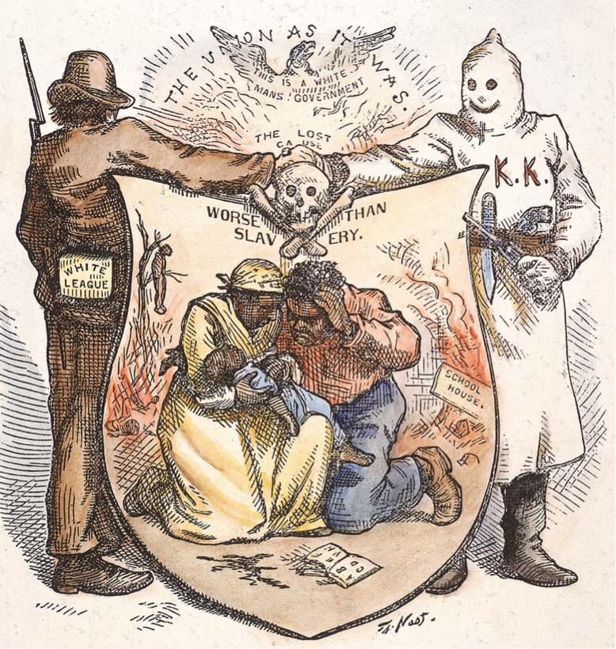
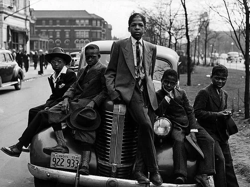
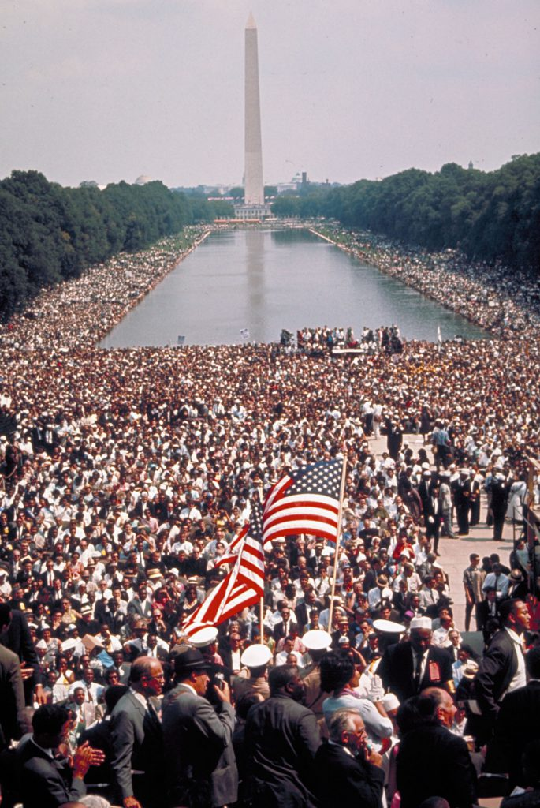

AFRICAN AMERICAN EXPERIENCE: FROM ENSLAVEMENT TO POWER
ESSENTIAL QUESTION
How did enslaved people and their descendants resist, survive, and transform American democracy from the inside?
In 1849, Harriet Tubman walked away from a plantation in Maryland and moved north through the dark. She was not only escaping. She was making a decision that would shape the rest of her life. She later returned south again and again to lead other people toward freedom.
In 1849, Harriet Tubman escaped from slavery in Maryland. She traveled north at night. She did not stop after she became free. She went back south to help other people escape too.
Her story is not an exception to the history of enslavementA system where people were forced to work and treated as property.. It is at the center of it. Enslaved people and their descendants were never only victims of history; they were people who resisted, built communities, and forced the country to face its own promises.
Her story is part of the history of enslavement. Enslaved people were not only victims. They fought back. They built families and communities. They pushed the country to change.
✦ ✦ ✦
ENSLAVEMENT AS A SYSTEM, NOT JUST A CONDITION
Slave auction illustration, nineteenth century. Source: Library of Congress.
Enslavement in the United States was not simply forced work. It was a legal and economic system built by laws, courts, governments, and businesses. By 1860, enslaved people were valued at about 3.5 billion dollars. That was more than all the factories and railroads in the United States combined.
Enslavement was not just forced work. It was a system. Laws, courts, and businesses protected it. By 1860, enslaved people were worth about 3.5 billion dollars to enslavers.
The system used law to make freedom nearly impossible. The Fugitive Slave Act forced people in free states to help return escaped enslaved people. Many Southern states made it illegal to teach enslaved people to read. In 1857, the Dred Scott decision said Black Americans could not be citizens of the United States.
The law helped slavery survive. The Fugitive Slave Act forced people to return freedom seekers. Some states banned teaching enslaved people to read. The Dred Scott decision said Black Americans could not be citizens.
The violence of this system reached into daily life. Families were separated when people were sold. African languages and customs were attacked. Names were taken and replaced. Punishment was often public because enslavers wanted resistance to look impossible.
The system used violence every day. Families were separated. Names and customs were taken. Public punishment was used to scare people. Enslavers wanted resistance to feel impossible.
Understanding enslavement as a system matters because systems do not end by accident. They are taken apart by people. When they are only partly taken apart, their effects can last long after the original laws are gone.
This matters because systems do not end by accident. People have to take them apart. When they are not fully ended, their effects can continue for generations.
"I have observed this in my experience of slavery: that whenever my condition was improved, instead of its increasing my contentment, it only increased my desire to be free."
Frederick Douglass, Narrative of the Life of Frederick Douglass, an American Slave, 1845.
Douglass escaped slavery and used his own life story to attack the system that tried to silence him.
DID YOU KNOW
Frederick Douglass portrait. Wikimedia Commons.
Frederick Douglass sat for portraits again and again because he understood that images were political. At a time when racist cartoons tried to make Black people look less than human, Douglass used the camera to answer back with dignity, seriousness, and control.
FAST FACTS
$3.5BHUMAN PROPERTY
13TUBMAN TRIPS
100KESCAPED NORTH
16BLACK CONGRESSMEN
6MMOVED NORTH
✦ ✦ ✦
RESISTANCE FROM THE BEGINNING
Enslaved people resisted from the moment they were captured. Some resisted on slave ships by refusing food or organizing revolts. Others resisted on plantations by slowing work, breaking tools, running away, and keeping family and spiritual traditions alive.
Enslaved people resisted from the start. Some fought back on ships. Some slowed work or broke tools. Some ran away. Others kept family stories and spiritual practices alive.
Harriet Tubman, ca. 1868 to 1869. Source: Library of Congress.

Illustration connected to Nat Turner's 1831 rebellion. Source: Wikimedia Commons.
In 1831, Nat Turner led the largest slave revolt in United States history. The rebellion was defeated, and Turner was executed. The reaction showed how afraid enslavers were: Southern states passed harsher laws against movement, gathering, and literacy.
In 1831, Nat Turner led the largest slave revolt in U.S. history. The revolt was defeated. Turner was executed. Southern states then passed harsher laws because enslavers were afraid.
The Underground Railroad was a powerful resistanceFighting back against an unfair system in many different ways. network. It was not one road or one group. It was a loose network of people who hid freedom seekers, shared food, offered shelter, and guided people north.
The Underground Railroad was a resistance network. It was not one road. Many people helped. They hid freedom seekers and helped them move north.

Underground Railroad routes toward free states and Canada. Source: Wikimedia Commons.
✦ ✦ ✦
RECONSTRUCTION: POWER WON AND DELIBERATELY DESTROYED
"First Colored Senator and Representatives," Currier and Ives, 1872. Source: Wikimedia Commons.
When the Civil War ended in 1865, a new political future briefly opened. During ReconstructionThe period after the Civil War when the South was rebuilt., Black men voted in large numbers. Sixteen Black Americans served in Congress. Hundreds more served in state governments.
After the Civil War, a new future opened for a short time. During Reconstruction, Black men voted. Sixteen Black Americans served in Congress. Hundreds served in state governments.
Black communities built schools, churches, businesses, and political organizations. For the first time, the United States moved closer to a multiracial democracy. That progress was real, but it was also attacked almost immediately.
Black communities built schools, churches, businesses, and political groups. The country moved closer to a democracy for many races. But this progress was attacked quickly.
White supremacist groups used murder, arson, threats, and terror to stop Black voting and Black leadership. In 1877, federal troops left the South. Without protection, Black political power was crushed by violence and new laws.
White supremacist groups used violence to stop Black voters and leaders. In 1877, federal troops left the South. Black political power lost protection. New laws and terror took many rights away.
Jim Crow segregation sign, twentieth century. Source: Library of Congress.
The Jim Crow era followed Reconstruction. Segregation shaped schools, hospitals, restaurants, jobs, and voting. About 4,000 Black Americans were lynched between 1877 and 1950. This violence was not random; it was meant to enforce white supremacy and silence political change.
Jim Crow came after Reconstruction. Segregation shaped schools, hospitals, jobs, and voting. About 4,000 Black Americans were lynched from 1877 to 1950. This violence was meant to protect white supremacy.
"The slave went free; stood a brief moment in the sun; then moved back again toward slavery."
W.E.B. Du Bois, Black Reconstruction in America, 1935.
Du Bois argued that Reconstruction was not a failure of Black leadership; it was a democracy violently destroyed by white supremacist power.
ART SPOTLIGHT

Thomas Nast, "The Union as it was," Harper's Weekly political cartoon, 1874. Source: Wikimedia Commons.
Nast drew this cartoon while Reconstruction was still being fought in the streets, not safely remembered in a textbook. The image shows that terror groups were not hidden side stories; they were public political forces trying to destroy Black citizenship in front of the whole country.
✦ ✦ ✦
MIGRATION, MOVEMENT, AND THE CLAIM TO POWER

Black families moved north and west during the Great Migration. Source: Library of Congress.
Between 1910 and 1970, about 6 million Black Americans left the South in the Great MigrationThe movement of millions of Black Americans from the South to other regions.. They were not only running from Jim Crow. They were moving toward wages, schools, voting power, and safer lives.
From 1910 to 1970, about 6 million Black Americans left the South. This was the Great Migration. People moved for jobs, schools, voting rights, and safer lives.
This movement transformed cities like Chicago, Detroit, Harlem, and Los Angeles. Black newspapers, churches, businesses, music, and political groups grew stronger. Migration became a way to resist by changing where power could be built.
This movement changed many cities. Black newspapers, churches, businesses, music, and political groups grew. Moving became another way to resist.
The Harlem Renaissance of the 1920s was one result. Writers, artists, and musicians argued through their work that Black life was rich, complex, and fully human. Later, the civil rights movement used boycotts, sit-ins, freedom rides, lawsuits, and marches to attack Jim Crow directly.
The Harlem Renaissance grew from this movement. Black writers, artists, and musicians showed the power of Black life. Later, the civil rights movement used boycotts, sit-ins, lawsuits, and marches to fight Jim Crow.
1831
NAT TURNER'S REBELLION
The largest slave revolt in United States history showed that slavery was never fully secure.
1849–1860
HARRIET TUBMAN
Tubman returned south many times and helped lead people to freedom.
1865–1877
RECONSTRUCTION
Black voters and leaders helped build the first real experiment in multiracial democracy.
1910–1970
THE GREAT MIGRATION
Millions moved north and west to seek safety, wages, schools, and political power.
1955–1968
CIVIL RIGHTS MOVEMENT
Boycotts, sit-ins, freedom rides, and marches helped dismantle Jim Crow law.
✦ ✦ ✦
PRIMARY SOURCE MOMENT
"We know through painful experience that freedom is never voluntarily given by the oppressor; it must be demanded by the oppressed."
Martin Luther King Jr., "Letter from Birmingham Jail," 1963.
King wrote these words from jail while defending direct action against segregation.
QUESTION 1: What does King mean when he says freedom must be demanded?
QUESTION 2: How does this source connect to the essential question about transforming democracy from the inside?
THEN AND NOW
BLACK RESISTANCE DID NOT JUST DEMAND RIGHTS; IT FORCED AMERICAN DEMOCRACY TO BECOME MORE HONEST ABOUT ITSELF.
1963

March on Washington, 1963.
TODAY
National Museum of African American History and Culture, Washington, D.C.
One image shows people filling the street to demand recognition; the other shows a national museum built to hold the history those people refused to let the country ignore.